Options Dialog
In "Options" dialog you may edit all IDM settings. Dialog has seven tabs: "General", "File Types", "Connection", "Save To", "Downloads", "Proxy / Socks", "Site logins", "Dial-Up", "Sounds".
General tab
"General" tab can be used to change IDM system integration options: automatic startup, integration options into browsers, URL clipboard monitoring. IDM integrates into Chrome, FireFox, Internet Explorer, Edge, Opera and many other popular browsers by default.
IDM supports basic and advanced browser integration types. The advanced browser integation can be used to integrate IDM into any browser. If you find any problems with advanced browser integration, you may turn it off and use basic browser integration.
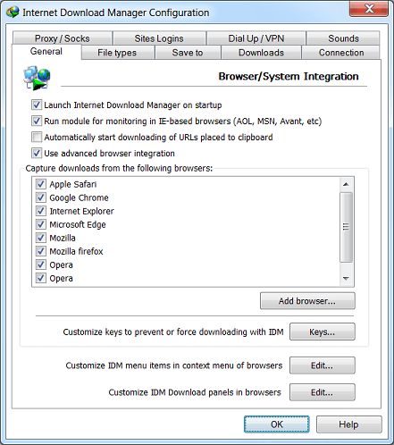
You can add a new browser by using "Add Browser..." button and locating browser executable file. IDM determines the version of the browser and will integrate into it.
IDM has a special module (IEMonitor.exe) for click monitoring in IE-based browsers (MSN Explorer, Avant, MyIE, some versions of AOL etc.) that runs separately from the main process of IDM. This module can be turned on/off using "Run module for click monitoring for IE-based browsers" checkbox.
"Keys" button let you select different keyboard keys to force or prevent downloading with IDM. When you press on the "Keys" button, "Using special keys" dialog will appear. You may select a combination of one or more keys suitable for your web browser.
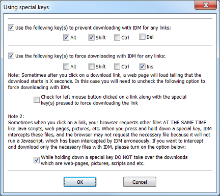
File Types tab
"File Types" tab can be used to change the list of file types that will be taken over from a browser and downloaded by IDM.
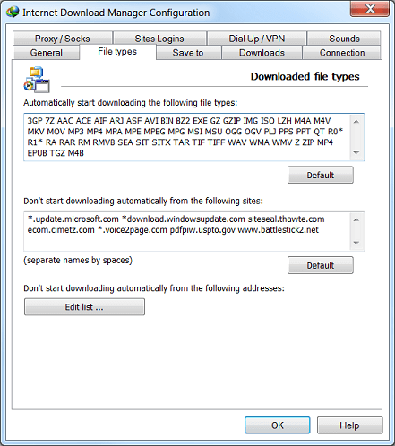
You can prevent IDM from downloading from specified sites. If you don't want IDM to take over all downloads from a particular site, you may add it to "Don't start downloading automatically from the following list" list. You may use asterisk to match any number of characters. For example *.tonec.com will match ftp.tonec.com, www.tonec.com, www.games.tonec.com, and etc.
You can also prevent IDM from downloading from specified web-addresses. You can add/remove web addresses in "The list of addresses exceptions" dialog that appears when you press on "Edit list..." button.
Connection tab
In connection tab you can set individual numbers of connections (numbers of threads to download) for the servers in "Exceptions:" table. You may need it for the servers that limit the number of connections from the same client. This is also useful for ftp servers that limit the number of connections to 1 or 2.
If you want to set download quotas on the usage of your Internet connection, you should enable "Download Limits" checkbox. It's useful for links that have some kind of fair access policy (like Direcway, Direct PC, Hughes, etc.). Let's say you set 40MB/hour or not more than 150MB every 4 hours, and IDM will download the maximum it can, and then resume automatically at a later time. This way you can download large files at the maximum possible speed.
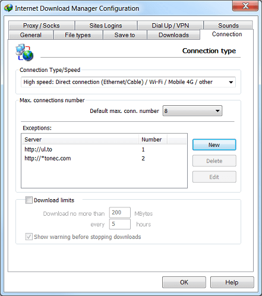
Save To tab
"Save To" tab defines the default save directory for all categories. You can also change this directory by picking "Properties" item in the right click menu of a selected category in the main IDM window. Downloaded file will be saved to the default directory of an appropriate category. But you can change the directory to save the file before downloading in "Download File Info" dialog. If "Change folder for ... category on last selected" checkbox is checked and you have changed the directory in "Download File Info" dialog, then the default save directory will change for all subsequent downloads in this category.
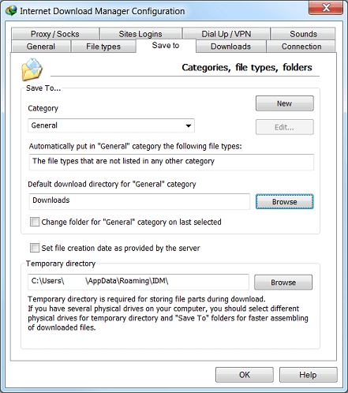
"Temporary Directory" tab defines the path where all temporary files should be stored. You may need to change this directory only if default location doesn't have enough free disc space.
Downloads tab
In Dialogs group box you can control how IDM dialogs are displayed. You can disable "Download Complete" dialog using "Show download complete dialog" box.
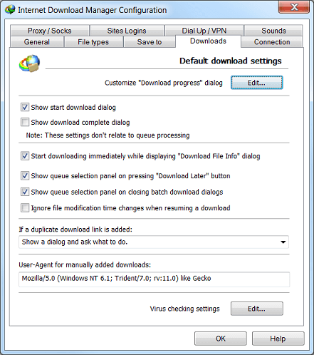
Press "Edit" near "Customize "Download Progress" dialog" label and then select "Don't show" item in "Start view" list box, if you don't want to see "Download Progress" dialog at all. If you don't like to see "Download Progress" dialog appearing in front of all other windows, select "Show minimized".
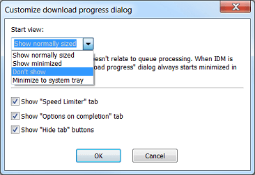
Internet Download Manager also supports the silent mode when all clicked files are automatically saved to the default directory. If you don't want to see "Download File Info", download progress and "Download Complete" dialogs, you may disable them. Just uncheck "Show start download dialog", "Show download complete dialog" and select "Don't show" item in "Customize download progress dialog" dialog list box.
Internet Download Manager is optimized for speed and it starts to download a file while showing "Download File Info" dialog. Thus while you are thinking about where to place a file after downloading on "Download File Info" dialog, the file may be downloaded partially or completely. If you use IDM scheduler and want to download the file later, or just want to add it to the queue, you may not need to start downloading the file on this dialog. In this case you should uncheck "Start download immediately while showing Download File Info dialog" checkbox.
When you add press "Download Later" button in "Download File Info" dialog or add batch downloads using "Tasks→Add batch download" or "Tasks→Add batch download from clipboard" IDM main menu items you can place files in a specific queue. To do this enable "Show queue selection panel..." options.
Sometimes Internet servers erroneously change file modification time with every download request. In this case IDM scheduler starts downloading such files from the scratch. To avoid it and to resume downloads correctly, you will need to check "Ignore file modification time changes when resuming a download" checkbox.
To act like a browser IDM uses the same user agent that is used by the browser it detects a download from. But for downloads added manually using "Add Url" button, you may change default user agent editing "User agent for manually added downloads" textbox.
If you would like to run antiviral software on download completion, you should press "Edit" near "Virus checking settings" label. In "Virus Checking" dialog type or browse the complete path to the executable file. If IDM knows about necessary parameters for a given executable file name, it will set them automatically. Otherwise you will have to set them manually in "Command line parameters" according to antiviral software documentation and replace file name with "[File]". If no parameters are set, IDM will execute antiviral software appending the complete path to a downloaded file.
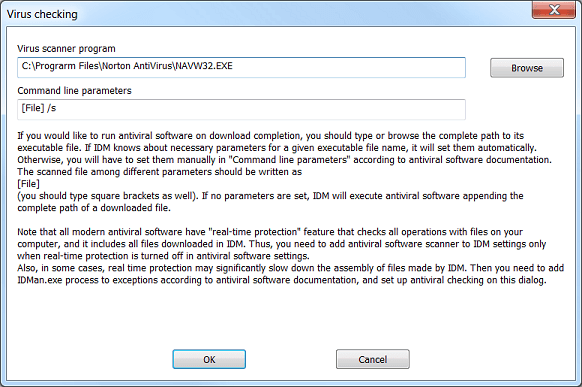
Proxy / Socks tab
"Proxy / Socks" tab can be used to make settings for your proxy servers. "Get System" button can be used to copy proxy settings from your browser. Alternativelly you may use automatic configuratation script or configure proxy manually and set separate proxy for each protocol
If "Use proxy/socks from a browser's request..." option is enabled, IDM will use the same proxy that is used in a browser you start a download from. It can be set in the browser settings or in some proxy / vpn extension installed in that browser.
You may type Internet addresses where IDM won't use proxy servers. Use asterisk to match any number of characters. For example "*.tonec.com" will match "ftp.tonec.com", "www.tonec.com", "www.games.tonec.com" etc.
"Use FTP in PASV" option means that passive mode of FTP protocol will be used. You should turn this option on of you are behind a firewall or a proxy server. You can also specify login information if your proxy server demands authorization.
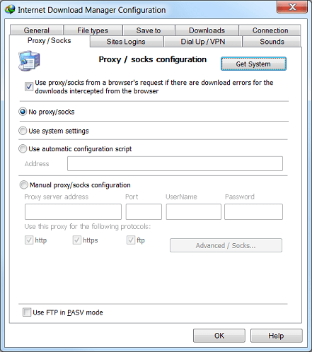
Site Logins tab
"Site Logins" tab is used for making a list of login information for the sites that demand authorization. You can add different login information for different directories of the same web site. Click on "New" button to add new URL and Username/Password information.
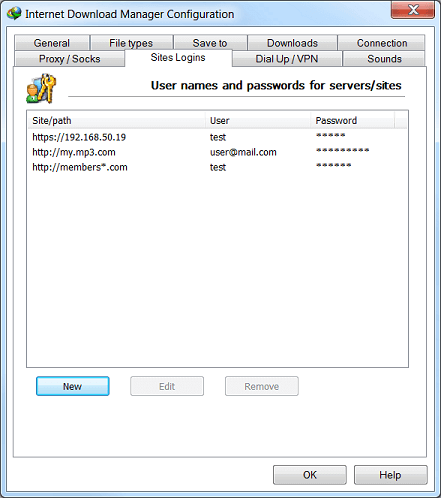
Dial Up / VPN tab
If standard "Windows Dial-Up" service is used, IDM can edit phone book records for your connections. In list box you can select a connection to use with IDM. If your computer is connected to the Internet, IDM shows this connection by default. Otherwise IDM shows the last used connection. If you run IDM for the first time, IDM selects first record from your phone book.
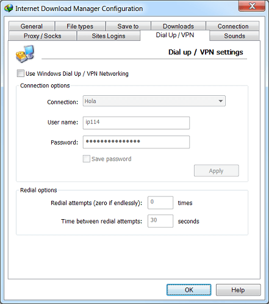
After selecting a connection, you can change username and password and save them in your phone book by clicking on "Apply" button. Check "Save Password" box if you don't want to enter password every time you start IDM. You can also set the number of redials (0 - endlessly) and time interval between them. Click on "OK" button to save changes or on "Cancel" to discard them.
Sounds tab
IDM can play different sounds for different download events. On this tab you can select sound files and set events.
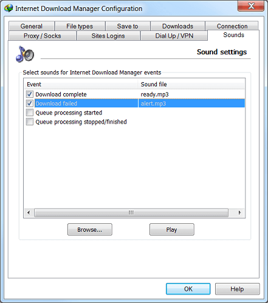
Tip: You can use standard Windows sounds stored in "Windows/Media" directory to play on events. To set a sound, select an event, click on "Browse" button, find a file to play and then check the event in the checkbox. You can test selected sound by using "Play" button.